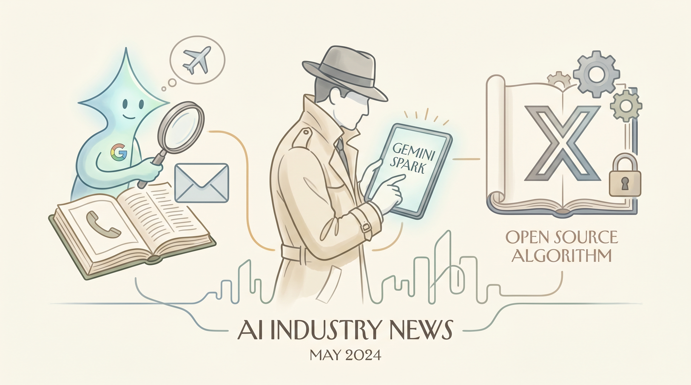

Google测试Gemini Spark AI代理，准备在I/O大会上推出
两克伴AIGC日报
2026-05-16 星期六

本期关注：谷歌测试Gemini Spark AI代理将支持航班预订与邮箱管理，X开源推荐算法并获Claude Code解读，Emergence World提出"世界构建"评估LLM新方法，Follow the Mean生成模型提升复杂分布建模能力。
📰 行业动态
Google的Gemini Spark可能即将推出，可自动处理航班预订和邮箱管理
🔥 今日焦点
X(推特)最近开源了其推荐算法，一位开发者使用Claude Code将复杂的算法步骤转化为通俗易懂的英文解释。这个开源举动意味着任何人都可以查看和理解X的内容推荐机制，这在社交媒体历史上是罕见的透明度突破。对于那些关心算法如何影响我们信息获取的用户来说，这提供了一个难得的窗口。虽然原始代码可能仍有一定技术门槛，但Claude Code的解读让普通开发者也能一窥究竟。这种透明度可能会引发更多关于算法公平性和透明度的讨论，也可能成为其他平台跟进的榜样。不过，算法只是冰山一角，真正影响用户体验的还有无数其他因素。
---
当前LLM基准测试可能已经'失效'，一个名为Emergence World的新项目提出用'世界构建'来评估大模型能力。这种方法通过要求模型进行长期、复杂的世界模拟，综合考察推理、记忆、规划等多方面能力，比传统的单一任务测试更接近真实应用场景。例如，让模型构建一个完整的虚拟世界并预测其发展，这需要模型具备持久的记忆、因果推理和长期规划能力。这种方法可能更难'刷榜'，也更能反映模型在实际任务中的真实表现。如果这种方法被广泛采用，可能会改变整个行业评估AI能力的方式，推动模型向更接近人类认知的方向发展。
📚 深度长文
🐦 Ta们说
> "Most documented psychological biases are not irrational, they are highly optimized, energy-efficient shortcuts meant for a biological substrate operating under strict real-time physical constraints and a limited caloric budget"
---
> "The biggest alpha leak of 2026 is that you can tokenmax $10k/mo with OpenClaw/Hermes + GBrain and get the AI that everyone will have in 2028 for $100/mo, but you can get it now, and that is the biggest single unlock you can have vs your competition"
---
> "Hard leftists and DSA-types will fight AI tooth and nail because AI is the universal solvent for socialism’s three prerequisites.
AI will reduce scarcity (abundance), eliminate victimhood (agency), and eliminate the need for intermediaries (disintermediation)."
📄 重点论文
**核心贡献**: 提出了一种将基于文本的工具调用基准转换为基于音频的评估方法，无需重新标注工具模式和金标签，通过文本到语音转换、说话人变化和环境噪声创建配对文本音频实例。
**与AI Agent的关联**: 为评估语音代理的工具使用能力提供了新的框架，对多智能体系统和工具使用的研究具有重要意义。
**核心贡献**: 讨论了行为保证在验证AI安全方面的局限性，指出当前保证方法在知识论上有限，无法验证AI的某些安全属性。
**与AI Agent的关联**: 对AI Agent的安全性研究具有指导意义，强调了在AI Agent设计和应用中安全性和治理的重要性。
🛠️ 产品推荐
Show HN：一款基于种子提示的自定义知识库系统。该产品通过整合LLM（大型语言模型）技术，帮助用户构建个性化知识库。用户可通过与LLM的对话生成知识内容，并利用Python脚本将Markdown文件转换为可浏览的HTML，实现知识库的便捷管理和查询。该产品有效解决了知识库管理困难、信息检索效率低下等问题，为技术从业者提供高效的知识管理解决方案。
---
Show HN: Agentic product discovery for AI apps and shopping agents 是一款专注于AI应用和购物代理的产品发现平台。该平台利用先进的AI技术，为用户提供智能化的产品推荐服务。通过分析用户行为和偏好，平台能够精准匹配用户需求，帮助用户快速找到心仪的产品。对于技术从业者而言，该平台不仅提高了工作效率，还降低了寻找合适产品的难度。其AI能力和创新点在于，通过不断学习和优化，平台能够持续提升推荐准确度和个性化程度，为用户提供更加智能、便捷的购物体验。